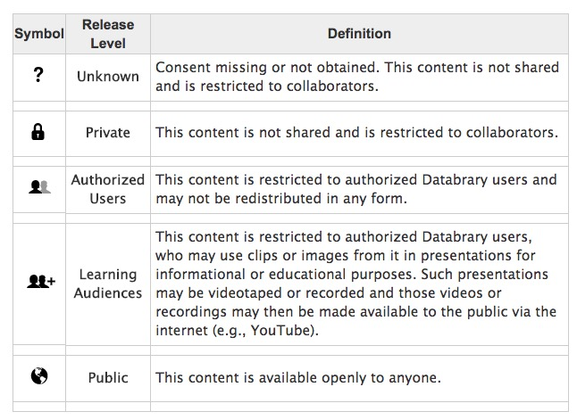

Video as data & documentation
Rick O. Gilmore
2018-04-24 10:55:33


Agenda
Video as data
Video as documentation
Open video sharing with Databrary
Video analysis with Datavyu
The future of video sharing
Video as data
Adolph, K., Tamis-LeMonda, C. & Gilmore, R.O. (2017). PLAY Project: Pilot Data Collections. Databrary. Retrieved April 24, 2018 from https://nyu.databrary.org/volume/444.
Video…
Captures the complexities and nuances of behavior unlike any other measure
Can be readily repurposed to answer new questions
Contains faces & voices that make it hard(er) to share openly
Involves large file sizes that pose challenges to storage & streaming
Video as documentation
The PLAY Project Wiki: https://dev1.ed-projects.nyu.edu/wikis/docuwiki/doku.php/landing
Bahrick, L.E. (2017). Multisensory Attention Assessment Protocol (MAAP). Databrary. http://doi.org/10.17910/B7.326.
Naigles, L. (2014). Children use syntax to learn verb meanings. Databrary. http://doi.org/10.17910/B7J01M.
Cole, P.M., Gilmore, R.O., Scherf, K.S. & Perez-Edgar, K. (2016). The Proximal Emotional Environment Project (PEEP). Databrary. http://doi.org/10.17910/B7.248.
Video (& audio)…
Reveals critical procedural details that text-based descriptions omit
Captures the complexities and nuances of experimenter behavior unlike any other measure
Is a “gold-standard” in documenting procedures, displays, & materials
Can document annotation/code definitions
The PLAY Project Wiki: https://dev1.ed-projects.nyu.edu/wikis/docuwiki/doku.php/landing
The PLAY Project Wiki: https://dev1.ed-projects.nyu.edu/wikis/docuwiki/doku.php/landing
Adolph, K.E., Gilmore, R.O., & Kennedy, J.L. (2017, October). Video data and documentation will improve psychological science. Psychological Science Agenda.
Open video sharing


is…
A data library
Specialized for storing, sharing, browsing, and reusing video & audio recordings + related data

Stores and shares session (person + place + time) metadata
Provides a policy framework for securely and ethically sharing identifiable data
Accelerates discovery through open data sharing
Open (unrestricted) data sharing accelerates discovery
Unaltered videos are most valuable for reuse
Videos are identifiable, but can be shared with participant permission
Sharing identifiable data
Restrict access: To researchers formally authorized by their institutions
Access agreement signed by researcher, institution
Seek permission to share: Using standardized language
Store for research team use; preservation
Share with other researchers (with participant permission)

https://www.databrary.org/resources/guide/investigators/release/release-levels.html
How does it work?
Register for access
Databrary staff get in touch
Institution signs Databrary Access Agreement
Browsing
Log on
Search, filter, play
Most teaching & pre-research use cases do not require IRB approval
Sharing data
Upload as-as-you go (“self-curate”)
Add metadata, links to other resources
Give collaborators access
Share when you’re ready (paper goes to press, grant ends)
Secondary (re)use
Get IRB approval
Search, filter
Download
Code & use videos
Video analysis with Datavyu
The future of video sharing
Domains beyond developmental psychology
From data repository to analysis platform
Scriptable visualization

Visualize Datavyu timelines stored on Databrary
Machine-assisted audio & video analysis
Source: LookIt, Kim Scott (MIT), & Rhodri Cuscak

Gilmore, R.O. & Adolph, K.E. (2017). Video can make behavioural science more reproducible. Nature Human Behaviour. doi:10.1038/s41562-017-0128
Thank you
databrary.org, @databrary
datavyu.org, @datavyu
rogilmore@psu.edu
gilmore-lab.github.io
This talk was produced on 2018-04-24 10:55:33 in RStudio 1.1.383 using R Markdown and the reveal.JS framework. The code and materials used to generate the slides may be found at https://github.com/gilmore-lab/2018-04-25-introducing-databrary/. Information about the R Session that produced the slides is as follows:
## R version 3.4.4 (2018-03-15)
## Platform: x86_64-apple-darwin15.6.0 (64-bit)
## Running under: macOS Sierra 10.12.6
##
## Matrix products: default
## BLAS: /System/Library/Frameworks/Accelerate.framework/Versions/A/Frameworks/vecLib.framework/Versions/A/libBLAS.dylib
## LAPACK: /Library/Frameworks/R.framework/Versions/3.4/Resources/lib/libRlapack.dylib
##
## locale:
## [1] en_US.UTF-8/en_US.UTF-8/en_US.UTF-8/C/en_US.UTF-8/en_US.UTF-8
##
## attached base packages:
## [1] stats graphics grDevices utils datasets methods base
##
## loaded via a namespace (and not attached):
## [1] compiler_3.4.4 backports_1.1.2 magrittr_1.5 rprojroot_1.3-2
## [5] htmltools_0.3.6 tools_3.4.4 revealjs_0.9 yaml_2.1.18
## [9] Rcpp_0.12.16 stringi_1.1.7 rmarkdown_1.9 knitr_1.20
## [13] stringr_1.3.0 digest_0.6.15 evaluate_0.10.1